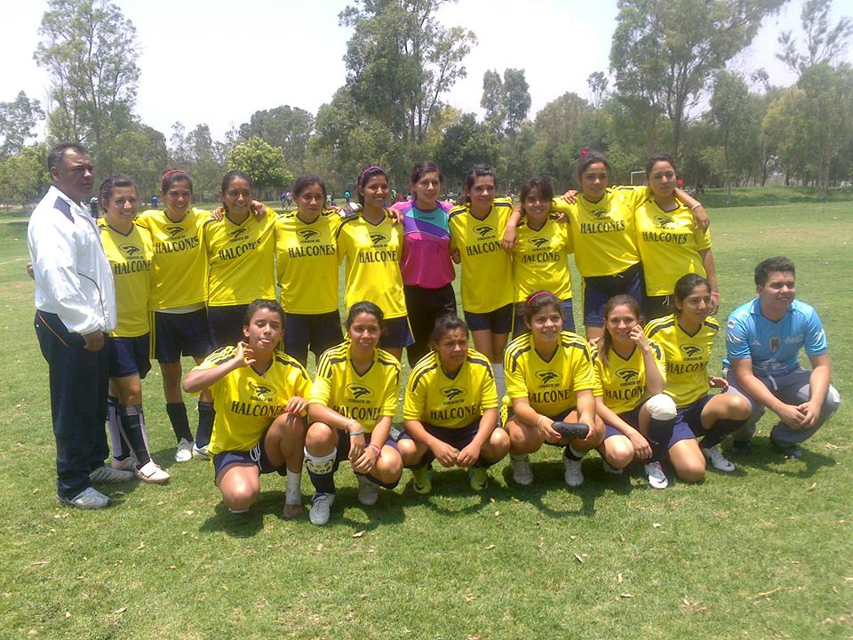

-
En deporte, la animación, cheer, porrismo o cheerleading consiste en el uso organizado de música, baile y gimnasia. Los espectáculos de animación son muy frecuentes, sobre todo, en deportes de equipo. La animación ha cobrado tal importancia que ha pasado a considerarse un deporte extremo.
Habiéndose originado en Estados Unidos, la animación posee una gran tradición, con aproximadamente 1.5 millones de porristas solo en el país americano. Además de su fin ya mencionado, es considerado como un deporte más, existiendo incluso competiciones mundiales como The Cheerleading Worlds, en la cual compiten más de mil equipos para ganar la medalla de oro que los distinga como el mejor grupo animador. En el resto del mundo es poca la práctica de la animación, salvo en algunos países con influencia de los deportes de EE.UU. o con concursos de animación auspiciados por marcas privadas. Se estima que la animación posee alrededor de 100.000 participantes repartidos en diferentes países del todo el mundo.
Artes plásticas
Las artes plásticas son aquellas artes que utilizan materiales capaces de ser modificados o moldeados por el artista para crear una obra. Son aquellas manifestaciones del ser humano que reflejan, con recursos plásticos, algún producto de su imaginación o su visión de la realidad.
Futbol Rápido
-
Es un deporte derivado del fútbol con equipos formados exclusivamente por sólo 7 jugadores. El deporte surge como adaptación del fútbol para enseñanza en categorías inferiores siendo su uso muy extendido en categorías inferiores. Las principales características y diferencias con respecto al fútbol once es que los equipos están formados por siete jugadores y se permite un numero ilimitado de cambios de jugadores; se practica únicamente en campos de grama sintética cubiertas y descubiertas. Según el número de jugadores siempre uno es el portero.

Basquetbol
El baloncesto o básquetbol (del inglés basketball) es un deporte en el cual compiten dos equipos de cinco jugadores cada uno. El objetivo es introducir la pelota (balón) en el aro (cesta o canasta) del equipo contrario, que se encuentra ubicado a 3,05 metros de altura. Por eso, el baloncesto suele ser jugado por personas de gran estatura.
Voleibol
El voleibol, vóleibol, volibol, vólibol, balonvolea o simplemente vóley, es un deporte que se juega con una pelota y en el que dos equipos, integrados por seis jugadores cada uno, se enfrentan sobre un área de juego separada por una red central.
Rondalla
Banda musical cuyos componentes tocan canciones populares con guitarras, bandurrias y otros instrumentos de cuerda similares, generalmente acompañados de castañuelas, panderetas y otros.
Baile Folklórico
La danza folklórica suele realizarse por tradición (no es un arte innovador) y puede ser bailada por cualquier hombre y mujer (no es exclusividad de los bailarines profesionales, aunque pueden existen grupos profesionales de danza folklórica).
Además de todo ello es importante establecer dos características más que definen a lo que es la danza folklórica. Por un lado nos topamos con el hecho de que, por regla general, aquella no es bailada por la aristocracia sino por la gente del pueblo llano y también es necesario resaltar que este tipo de baile ha dado lugar en muchos casos a nuevos bailes modernos.

Baile Moderno
El baile moderno es uno de los estilos más populares de hoy en día, es de las únicas disciplinas que no se encasilla en una música específica,se suele utilizar desde britney spears, Michael jackson…hasta música más melódica.

Taekwando
Taekwondo es un término que procede del coreano y que hace referencia a un arte marcial del mismo origen. ... La frase “tae kwon do”, por lo tanto, alude al uso de los pies y las manos en una técnica que, por extensión, no apela a ninguna clase de armamento.
Coro
En canto, se denomina coro, coral o agrupación vocal a un conjunto de personas que interpretan una pieza de música vocal de manera coordinada. Es el medio interpretativo colectivo de las obras cantadas o que requieren la intervención de la voz.
Teatro
El teatro ? es la rama de las artes escénicas relacionada con la actuación. Representa historias actuadas frente a los espectadores o frente a una cámara usando una combinación de discurso, gestos, escenografía, música, sonido o espectáculo.
Handball
Es un deporte de pelota en el que se enfrentan dos equipos y se caracteriza por transportarla con las manos. Cada equipo se compone de siete jugadores, pudiendo el equipo contar con otros siete jugadores reservas que pueden intercambiarse en cualquier momento con sus compañeros
Natación
La natación es el movimiento y el desplazamiento a través del agua mediante el uso de las extremidades corporales y por lo general sin utilizar ningún instrumento o apoyo para avanzar. Generalmente la natación se hace para recreación, deporte, ejercicio o supervivencia. Los seres humanos pueden contener la respiración bajo el agua y realizar natación locomotora rudimentaria, esto se puede hacer semanas después del nacimiento como una respuesta evolutiva.